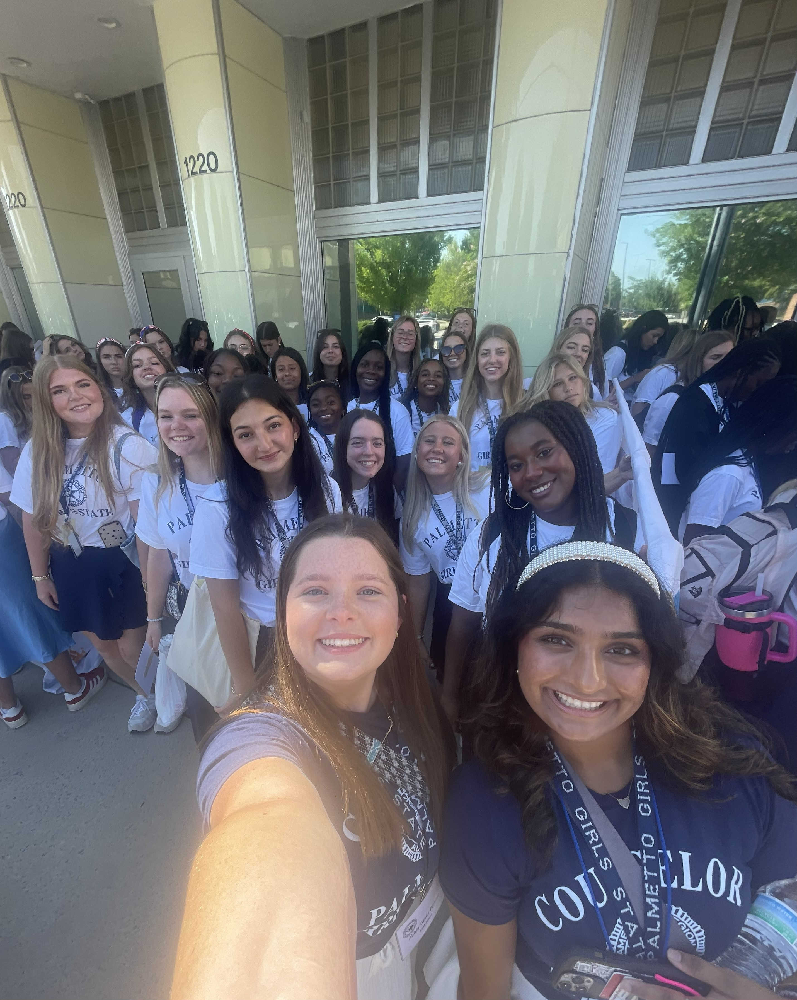
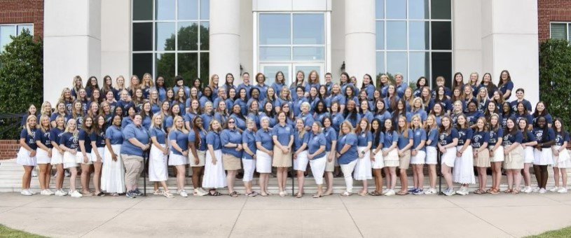
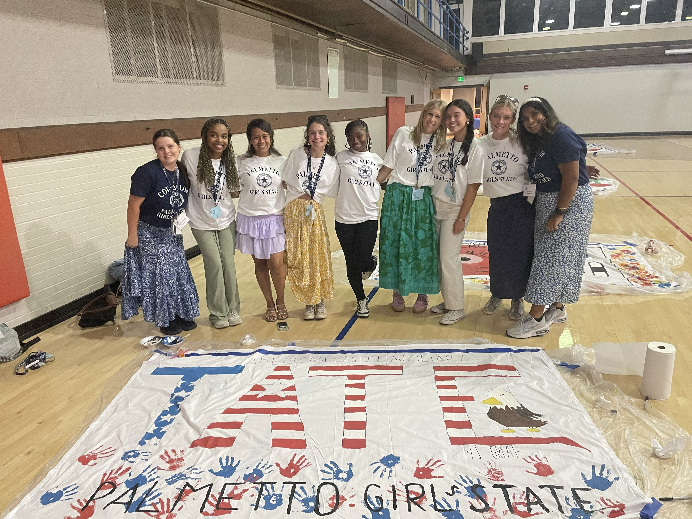
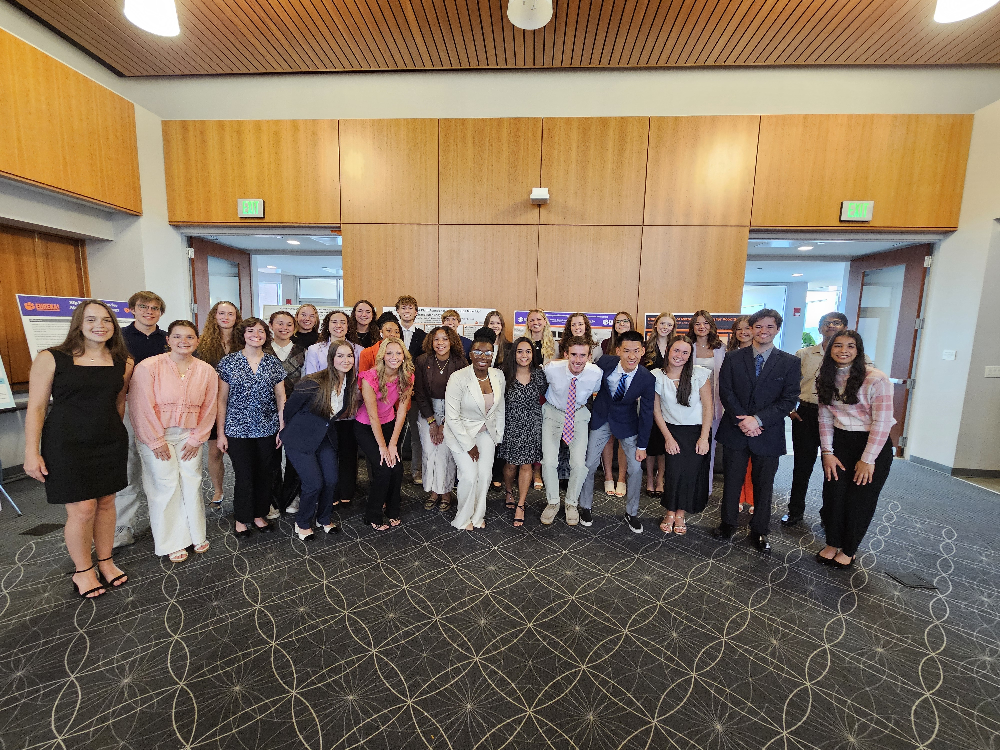
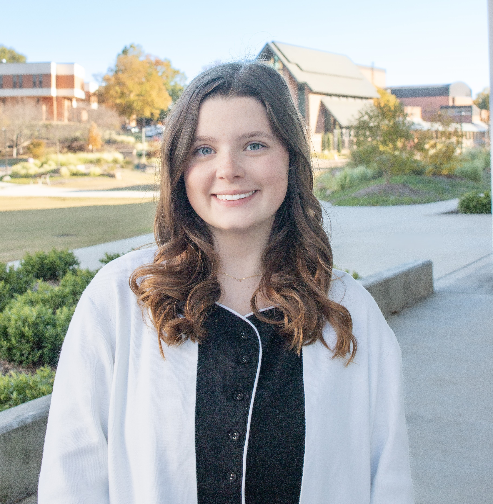
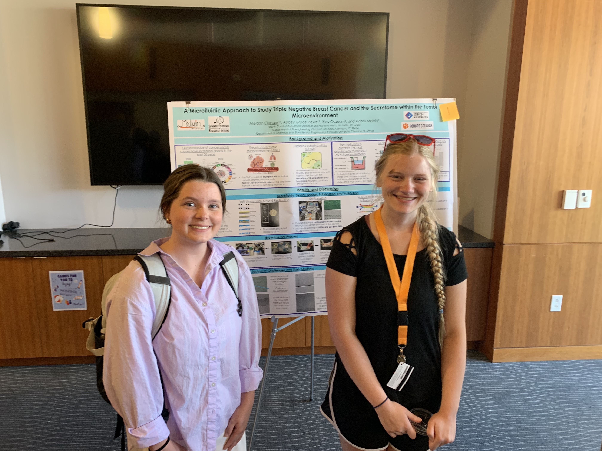
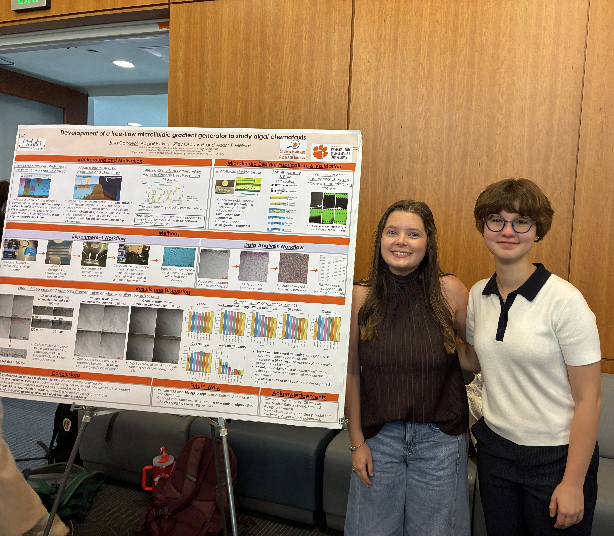

Leadership and Work Experience at Clemson
Through my work and leadership, I have gained skills in organization, problem solving, adaptability, and collaborative communication.



In the summers of 2023 and 2024, I served as a counselor at Palmetto Girls State. This is a prestigious program that each state has, along with boys state, where high school students have the opportunity to hear guest speakers, such as local politicians and other change makers, and learn about the political system, activism, and more. In my experience, I was able to see hundreds of girls gain confidence in their mind and abilities, put themselves out there to run for election (during my time, I was in the girls state house of representatives), and build lifelong friendships. I was in charge of organization, communicating with all of the students where they needed to be and when they needed to be there, and I responded to medical emergencies on several occasions.
.jpeg)

During the summer of 2024, I had the opportunity to serve as head counselor of the EUREKA! program where I helped incoming first-year, honors students adjust to life on campus and research.

Through the UPIC program on campus, I have been able to serve as a writer for the Decipher magazine. This has allowed me to write about a variety of research projects at Clemson, advanced my writing and creativity, and allowed me to assist with events such as tabling at Clemson symposiums, interviewing students with Dji equipment, and more.


Throughout the summers of 2025 and 2026, I have been able to mentor high school students through the "Summer Program for Research Interns" (or SPRI Program). I was able to walk these students through protocols, conduct experiments, educate them on the physics, biology, and chemistry behind our microfluidic devices, and prepare them for their own research symposium by going through poster formatting and public speaking.
Roles Not Pictured Above
Undergraduate Teaching Assistant (Spring 2025, Fall 2025, and Spring 2026) - Gave me the opportunity to help with the Introduction to Engineering and Matlab courses. Therefore, these experiences continuously refreshed my arithmetic and coding knowledge while giving me the confidence to tutor through office hours and help teach these subjects. The most rewarding part of this experience was watching students that may be unsure of their engineering abilities allow me to encourage them, highlight their potential, and then see them become motivated and demonstrate a genuine understanding of the material.
Chemistry lab stockroom assistant (Fall 2024 to present) - This position has allowed me to cotinuously apply my knowledge of general chemistry and organic chemistry in order to store chemicals, handle highly corrosive or dangerous chemicals, create new solutions whenever the labs ran out, and assist students in the general chemistry labs by preparing their materials and providing assistance or guidance with operating equipment.